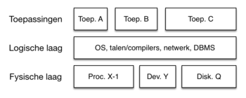

Een toepassingslaag, ook wel de applicatielaag genoemd, is een van de lagen in een computersysteem die deel uitmaakt van het OSI-model (Open Systems Interconnection-model). Deze laag speelt een cruciale rol bij de communicatie tussen softwareapplicaties, ongeacht of ze op dezelfde computer of op verschillende computers in een netwerk draaien.
De toepassingslaag in een computernetwerk heeft verschillende functies die ervoor zorgen dat applicaties met elkaar kunnen communiceren en gegevens kunnen uitwisselen. Hier zijn de belangrijkste functies van de toepassingslaag op een rijtje:Gegevensuitwisseling, Protocolomzetting, Sessiebeheer, Gegevenspresentatie, Authenticatie en autorisatie, E-mail en messaging, Webbrowsing, Bestandsuitwisseling, Databases en Real-time communicatie
De toepassingslaag is cruciaal voor het mogelijk maken van communicatie en samenwerking tussen verschillende applicaties en gebruikers op een netwerk. Het maakt gebruik van protocollen en diensten om ervoor te zorgen dat gegevens op een gestandaardiseerde en begrijpelijke manier worden uitgewisseld en gepresenteerd.
